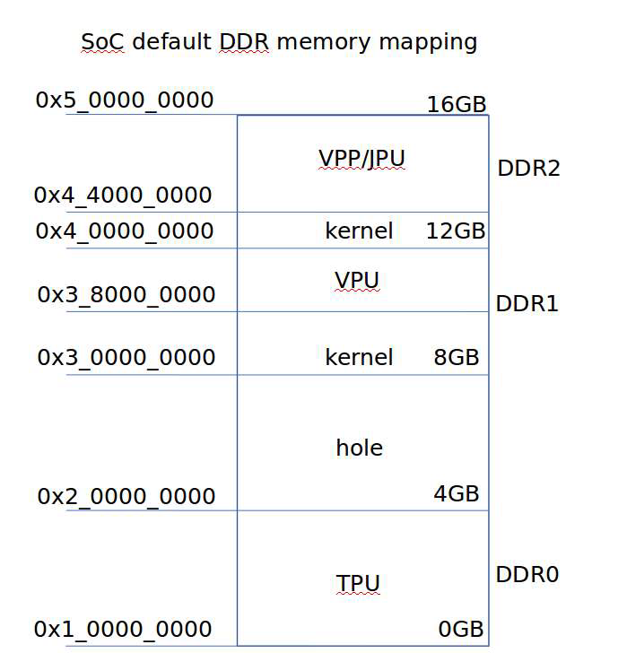
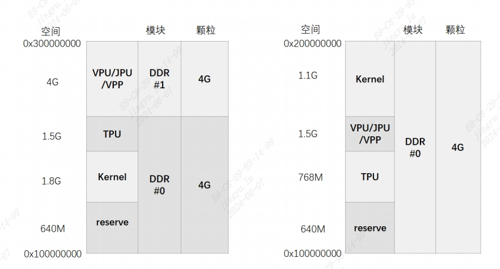
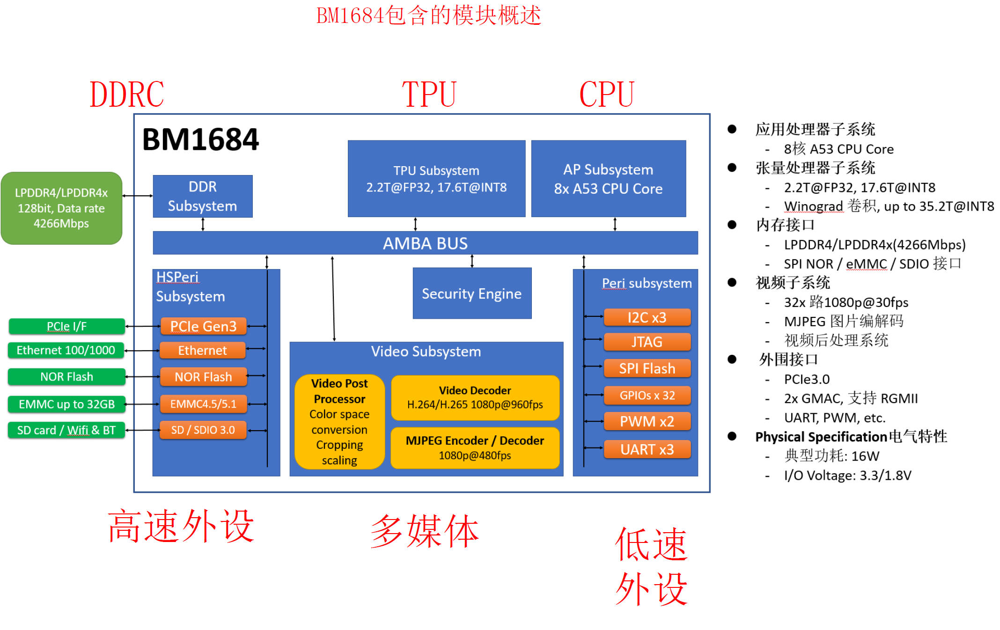
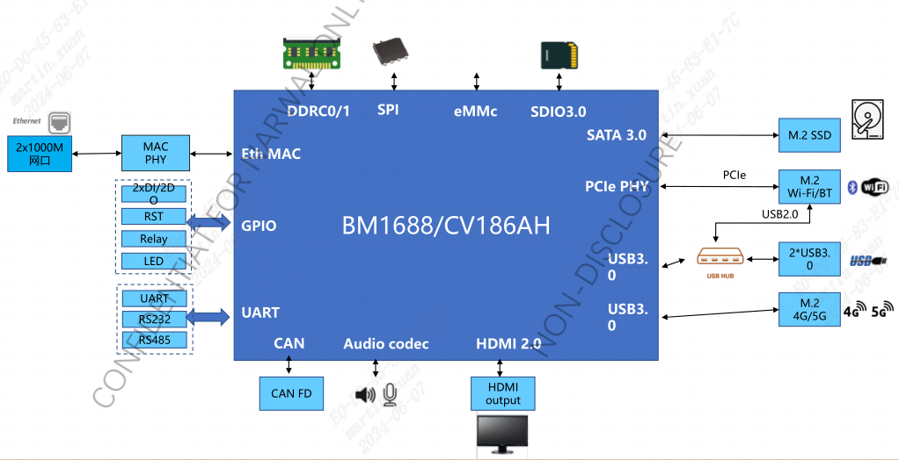
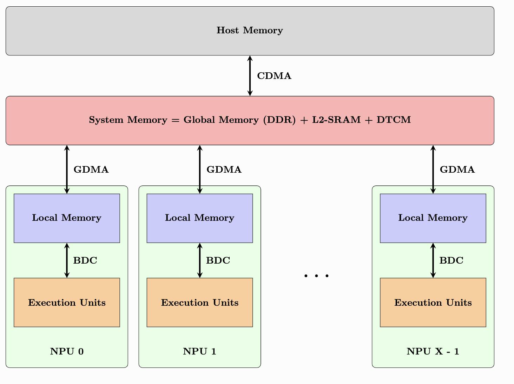

2. 基础概念常见问题¶
2.1. 名词解释¶
术语 |
说明 |
|---|---|
BM1688/CV186AH |
算能科技面向深度学习领域推出的两款第五代张量处理器 |
BM1684X |
算能科技面向深度学习领域推出的第四代张量处理器 |
BM1684 |
算能科技面向深度学习领域推出的第三代张量处理器 |
VPSS |
BM1688/CV186AH 中的视频处理子系统，包括图形运算加速单元以及解码单元 |
VPU |
BM1684/BM1684X 中的解码单元 |
VPP |
BM1684/BM1684X 中的图形运算加速单元 |
JPU |
BM1688/CV186AH/BM1684X/BM1684 中的图像JPEG编解码单元 |
SOPHONSDK |
算能科技基于 BM1688/CV186AH/BM1684X/BM1684 的原创深度学习开发工具包 |
PCIE Mode |
BM1684、BM1684X 的一种工作形态，芯片作为加速设备来进行使用，客户算法运行于x86主机 |
SoC Mode |
BM1684、BM1684X 、BM1688、CV186AH 的一种工作形态，芯片本身作为主机独立运行，客户算法可以直接运行其上 |
arm_pcie Mode |
BM1684、BM1684X 的一种工作形态，搭载芯片的板卡作为PCIe从设备插到ARM cpu的服务器上，客户算法运行于ARM cpu的主机上 |
BMRuntime |
智能视觉深度学习处理器推理接口库 |
BMCV |
图形运算硬件加速接口库 |
BMLib |
在内核驱动之上封装的一层底层软件库，用于：设备管理、内存管理、数据搬运、API 发送、A53使能、功耗控制 |
BModel |
面向算能智能视觉深度学习处理器处理器的深度神经网络模型文件格式，其中包含目标网络的权重（weight）、智能视觉深度学习处理器指令流等 |
SAIL |
支持Python/C++接口的高级封装库，是对BMCV、 BMLib、BMRuntime、SOPHON-MW（ BM1688、CV186AH 中名称更改为 SOPHON-MEDIA）等的进一步封装 |
2.2. 算丰系列产品有哪些硬件形态？¶
答：芯片 BM1684、BM1684X、BM1688、CV186AH；模组SM5、SM7、SM9；边缘计算盒子SE5、SE7、SE8、SE9；PCIe加速卡SC5H、SC5+、SC7；服务器SG6等。更多产品形态请参考 SOPHON产品。
2.3. 算丰系列产品的内存概念？¶
内存是应用调试中经常会涉及的重要概念，特别地，有以下3个概念需要特别区分清楚：Global Memory、Host Memory、Device Memory。
全局内存（Global Memory）： 指算能芯片外挂的DDR，规格详情请参考产品手册。
设备内存（Device Memory）和系统内存（Host Memory）： 根据产品类型或工作模式的不同，设备内存和系统内存具有不同的含义：
SoC模式（SE5、SE7、SE9） Host Memory是芯片上主控Cortex A53的内存 Device Memory是划分给智能视觉深度学习处理器/VPP/VPU的设备内存
PCIe模式（SC5、SC7） Host Memory是主机的内存 Device Memory是PCIe板卡的设备内存
2.3.1. SE5 内存映射分区表(参考)¶
2.3.2. SE9 内存映射分区表(参考)¶
2.3.3. SE5、SE7各个内存间数据搬运速度说明¶
一般来说，系统内共有三个内存分别为DDR0-DDR2， 其中DDR0 是交错的。 各个子系统访问规则如下：
jpu |
decode |
encode |
vpp |
gdma |
|
|---|---|---|---|---|---|
DDR0 |
可读写 |
不能访问 |
不能访问 |
可写 |
可读写 |
DDR1 |
可读写 |
可读写 |
可读写 |
可读写 |
可读写 |
DDR2 |
可读写 |
可读写 |
可读写 |
可读写 |
可读写 |
DDR0 的速度最快，DDR1-DDR2 次之，速度排列大致如下：
源 |
目的 |
速度 |
|---|---|---|
DDR0 |
DDR0 |
快 |
DDR0 |
DDR1 |
快 |
DDR0 |
DDR2 |
快 |
DDR1 |
DDR1 |
慢 |
DDR1 |
DDR2 |
快 |
DDR2 |
DDR2 |
慢 |
DDR 到智能视觉深度学习处理器(Local mem)速度分析
源 |
目的 |
速度 |
|---|---|---|
DDR0 |
Local mem |
最快 |
DDR1 |
Local mem |
快 |
DDR2 |
Local mem |
快 |
SOC 下内存带宽速度参考数据如下：
./test_ddr_bindwidth 0x800000
Src:(addr=105100000, heap_id=0), Dst:(addr=105900000,heap_id=0), size:0x800000 byte.
Cost time:633 us, Bandwidth:12638.23 MB/s
Src:(addr=105100000, heap_id=0), Dst:(addr=440000000,heap_id=1), size:0x800000 byte.
Cost time:598 us, Bandwidth:13377.93 MB/s
Src:(addr=440000000, heap_id=1), Dst:(addr=105100000,heap_id=0), size:0x800000 byte.
Cost time:601 us, Bandwidth:13311.15 MB/s
Src:(addr=440000000, heap_id=1), Dst:(addr=440800000,heap_id=1), size:0x800000 byte.
Cost time:1264 us, Bandwidth:6329.11 MB/
2.4. 算丰系列芯片的基本架构？¶
2.4.1. BM1684、BM1684X 的基本架构？¶
2.4.2. BM1688、CV186AH 的基本架构？¶
2.4.3. SIMD 单指令数据流众核底层架构？¶
BM1684 智能视觉深度学习处理器是SIMD(Single Instruction Mulit Data)单指令多数据流众核架构，内部主要包括BDC（SIMD 的控制器，控制EU做运算 ）和GDMA（memory间的数据搬运）。 1684 内部还有1个32位MCU ARM9，在运行动态编译生成的bmodel时将发送指令完成运算；EU运算单元1024个 = 16 个 * 64个NPU；Local Memory 32MB = 512KB * 64个NPU，用于存放EU原子操作的输入输出数据 。
2.4.4. 什么是DTCM？¶
答：DTCM是智能视觉深度学习处理器内部的MCU ARM9的高速缓存空间（512KB）。